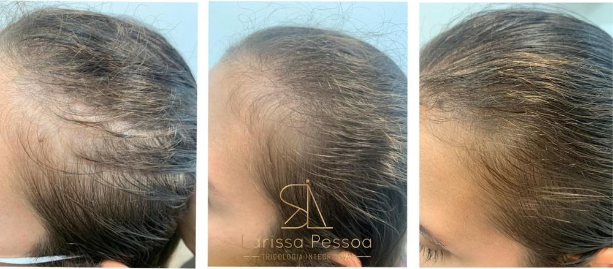
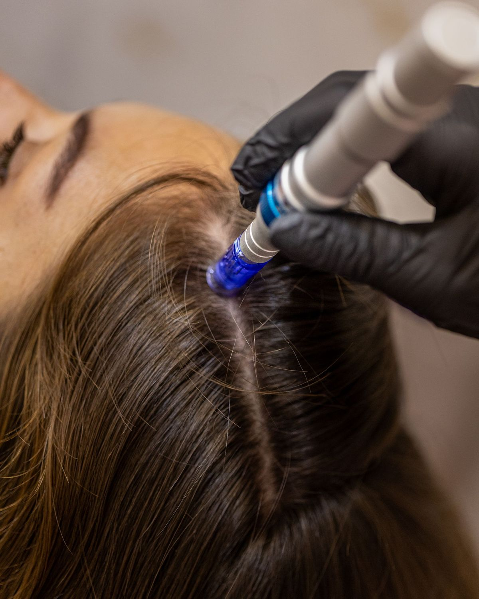
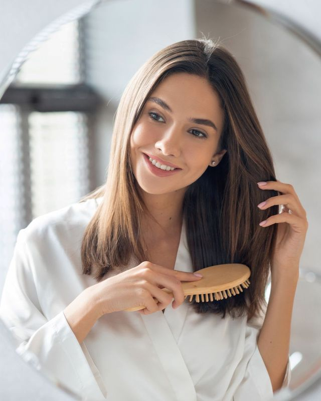

Calvície feminina
Na mulher, a calvície raramente forma entradas. Ela aparece como uma risca que se alarga e um topo que perde volume, enquanto a linha da testa continua no lugar.

Quando procurar uma avaliação
Risca mais larga
Dá para ver mais pele ao longo da risca central do que antes.
Topo com menos volume
O cabelo assenta mais rente ao couro cabeludo no alto da cabeça.
Rabo de cavalo mais fino
O elástico dá mais voltas do que dava alguns anos atrás.
Fios de espessuras diferentes
Fios finos e curtos misturados aos normais, sinal de miniaturização.
Couro cabeludo sob a luz
Em fotos com flash ou sob luz de cima, o topo aparece.
Por que acontece
A mesma aparência pode ter causas diferentes, e cada causa pede um tratamento. Estas são as mais comuns.
- Alopecia androgenética
- Predisposição genética e sensibilidade do folículo aos hormônios androgênios. O fio afina a cada ciclo até ficar quase invisível.
- Mudanças hormonais
- Menopausa, pós-parto, síndrome dos ovários policísticos e a suspensão de anticoncepcionais podem iniciar ou acelerar o quadro.
- Queda associada
- Falta de ferro, alterações de tireoide e estresse se somam à calvície e aumentam a perda de volume.
- Microinflamação
- Inflamação discreta ao redor do folículo, visível na tricoscopia, que contribui para a miniaturização.

Como tratamos

O plano parte do diagnóstico, nunca de um pacote pronto. Os tratamentos da Hairzenit são clínicos e sem cirurgia.
Plano multimodal
Tecnologias, ativos e cuidado em casa combinados conforme o grau da calvície. É a abordagem descrita no estudo de caso da equipe sobre alopecia androgenética feminina, publicado em 2025.
MMP
Microinfusão de medicamentos na pele: ativos aplicados diretamente na região afetada para estimular as unidades foliculares.
Laser e LED capilar
Estimulam o folículo e a circulação, com sessões sem dor e sem tempo de recuperação.
Mesoject
Ativos levados ao couro cabeludo por eletroporação, sem agulhas.
Fator hormonal
Quando há componente hormonal, o tratamento é conduzido junto com a ginecologista ou a endocrinologista.
Ler o estudo de caso publicado no Brazilian Journal of Hair Health →
Tudo começa pela tricoscopia
Na consulta, o couro cabeludo é examinado com ampliação de até 200 vezes. Com a história clínica e, se necessário, exames, a tricologista define a causa e monta o plano: em casa, no consultório ou nos dois.
Você pode ser atendida pela equipe Hairzenit ou por Larissa Pessoa, fundadora da clínica.

Perguntas frequentes
Calvície feminina tem cura?
Não existe cura definitiva, mas existe controle. O tratamento contínuo desacelera a miniaturização, recupera densidade e preserva os fios que você tem.
Como diferenciar calvície de queda?
Na queda, você vê fios caindo. Na calvície, você vê o volume diminuir, muitas vezes sem queda perceptível. A tricoscopia mostra a miniaturização e separa os dois quadros, que podem acontecer juntos.
Em quanto tempo aparece resultado?
Os primeiros sinais aparecem entre 60 e 120 dias, conforme o estágio. A calvície pede acompanhamento contínuo, com reavaliações periódicas.
Vou precisar de transplante?
Na maioria dos casos tratados cedo, não. O tratamento clínico recupera e mantém densidade sem cirurgia. Em quadros muito avançados, a avaliação indica se vale considerar o transplante.
A menopausa piora a calvície?
Pode acelerar. Com a queda do estrogênio, o folículo fica mais exposto aos androgênios. Por isso a avaliação considera a sua fase hormonal.
Outros sinais
- 01Queda de cabeloNo ralo e na escova
- 02Calvície femininaNa risca do cabelo
- 03Calvície masculinaNas entradas e na coroa
- 04Couro cabeludo aparenteSob a luz, no topo
- 05Afinamento dos fiosNo rabo de cavalo
- 06Perda de densidade capilarNo volume, ano a ano

Calvície feminina tem tratamento. Comece pela causa.

Pronto para a avaliação?
Copacabana e Cabo Frio, com hora marcada. WhatsApp (21) 97278-0789.